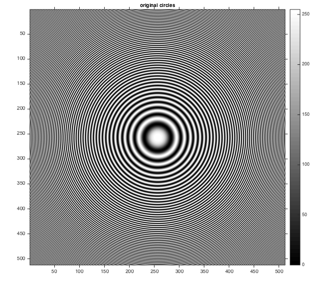
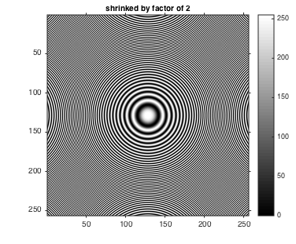
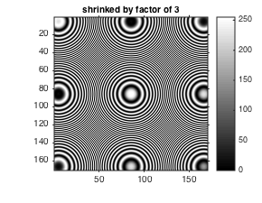
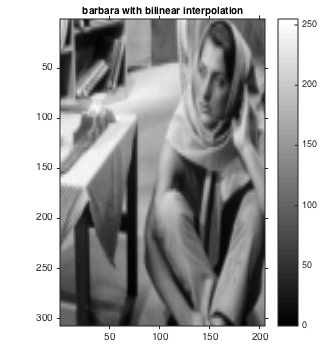
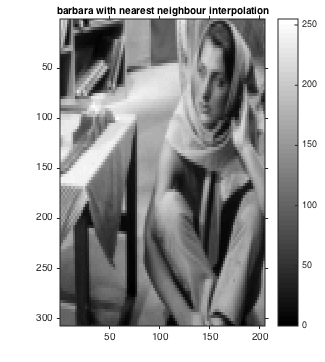

Image Resizing
Objective:
- Shrinking image to show Moire effect on concentric circles
- Image enlargement using bilinear interpolation
- Image enlargement using nearest neighbour interpolation
Contents
Colormap
- Number of intensities = 256
- displayGrayScale is a lambda function which displays an image with 256 intensities
myNumOfColors= 256; myColorScale = [ [0:1/(myNumOfColors-1):1]' , [0:1/(myNumOfColors-1):1]' , [0:1/(myNumOfColors-1):1]' ]; displayGrayScale = @(image, title) displayImageWithColorBar(image, title, myColorScale, gray);
Defining and Reading test input files
barbara_filename = '../data/barbaraSmall.png'; circles_filename = '../data/circles_concentric.png'; barbara = imread(barbara_filename); circles = imread(circles_filename);
Image shrinking
Original Image
displayGrayScale(circles, 'original circles');
 Shrinked by factor of 2
tic;
shrink_by_2 = myShrinkImageByFactorD(circles, 2);
toc;
displayGrayScale(shrink_by_2, 'shrinked by factor of 2');
Elapsed time is 2.450872 seconds.
Shrinked by factor of 3
tic;
shrink_by_3 = myShrinkImageByFactorD(circles, 3);
toc;
displayGrayScale(shrink_by_3, 'shrinked by factor of 3');
Elapsed time is 0.993078 seconds.
Image Enlargement
Original Image
displayGrayScale(barbara, 'Original Barbara');

Bilinear Interpolaion
tic;
bilinear_interpolation = myBilinearInterpolation(barbara);
toc;
displayGrayScale(bilinear_interpolation, 'barbara with bilinear interpolation');
Elapsed time is 0.011820 seconds.
Nearest Neighbour Interpolation
tic;
nearest_neighbour_interpolation = myNearestNeighborInterpolation(barbara);
toc;
displayGrayScale(nearest_neighbour_interpolation, 'barbara with nearest neighbour interpolation');
Elapsed time is 0.077314 seconds.